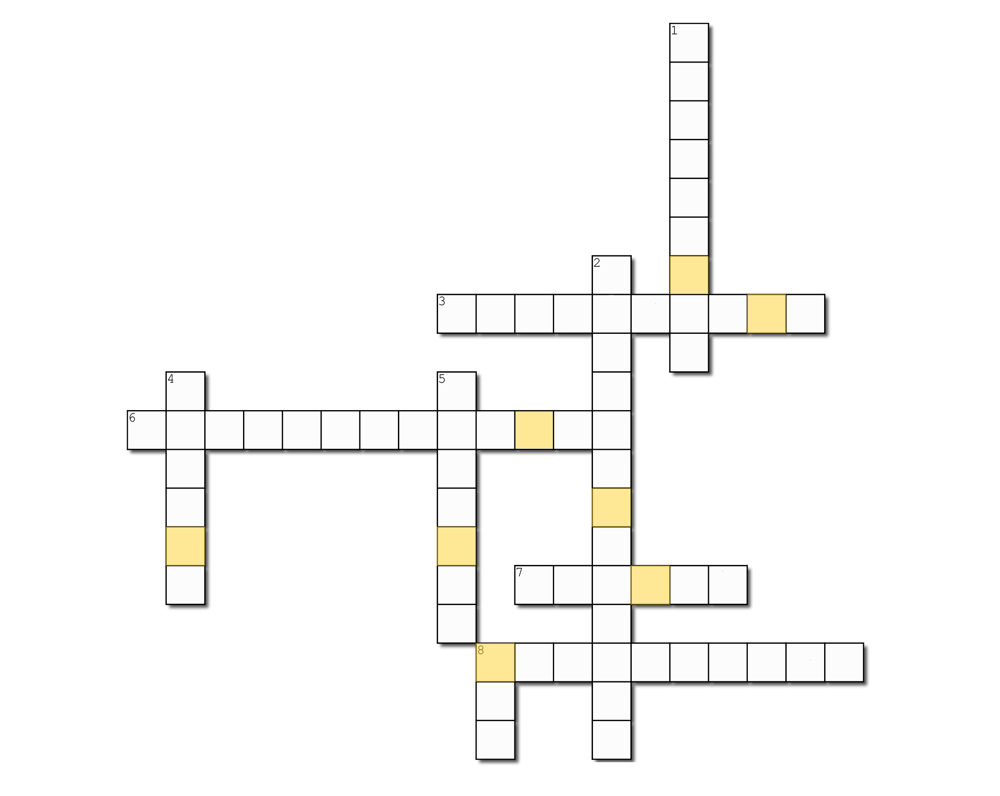

마지막 문제
지금까지 했던 것들을 정리해 봅시다!
고지가 눈 앞이에요! 조금만 더 화이팅 하세요! 참고는 답은 영어로 적으셔야 해요! 띄어쓰기도 조심!

Across
- 3. 두번째 문제에서의 숨겨져있던 파일의 이름은?
- 6. 밀려있던 다섯번째 문제에서 사용되었던 이것은?
- 7. 이것은 분산 버전 관리 툴인 깃 저장소 호스팅을 지원하는 웹 서비스이다.
- 8. 현재 Working Directory의 파일 변경 상태를 알기 위한 GIT 명령어는?
Down
- 1. 원격 Repository를 로컬 레포지토리로 복사하기 위한 최초 GIT 명령어는?
- 2. 원격 Repository 주소를 확인하기 위하여 사용한 GIT 명령어는?
- 4. 여섯번째 문제에서 사용하였던 인코딩 방식은?
- 5. 현재 Repository의 로그를 확인하기 위한 GIT 명령어는?
- 8. 이것은 컴퓨터 파일의 변경사항을 추적하고 여러 명의 사용자들 간에 해당 파일들의 작업을 조율하기 위한 분산 버전 관리 시스템이다. 또는 이러한 명령어를 가리킨다.
LIKELION UNIV. ✕ INHA UNIV.